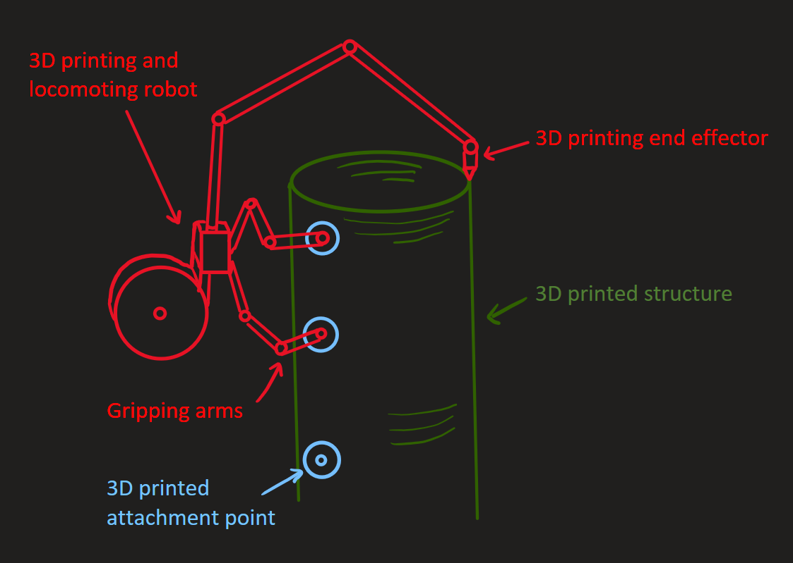
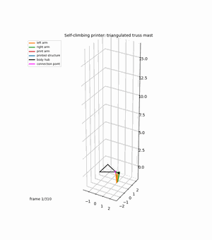
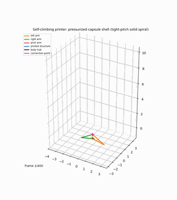

Concept · Prototype in progress
The 3D-Printing Spider Bot
A 3D printer that moves along the structure it prints. Robotic arms climb, anchor and extrude, so a small satellite could build structures far larger than itself.
The idea
The problem
Space structures are limited by the size of a rocket's payload fairing. Anything big, such as solar arrays, antennas, habitats or station trusses, must be folded and unfolded, or assembled piece by piece by astronauts or teleoperated arms.
What's needed is a manufacturing system that is autonomous, universal (any structure, any size) and still small enough to launch affordably.
The answer: print, then move
Launch a small robot that prints the structure in orbit, then walks along what it just printed. Like an inchworm, it anchors, extrudes the next segment, grips it and pulls itself forward.
Attachment points are printed into the structure itself, so the cycle repeats indefinitely. In effect the printer's build volume is infinite, and it never has to grip a structure while floating free.
How one cycle works
- Anchor. The rear gripper locks onto the last printed attachment point.
- Extrude. The print-head arm lays down the next segment of structure.
- Cure. The new segment sets enough to carry the robot's weight.
- Advance. The front gripper clamps the new segment, the rear releases, and the robot steps forward.
- Repeat. The structure grows one section at a time, in any direction the mission needs.



The Earth prototype
To test the cycle on the ground, the robot is inverted: the chassis is bolted down and the printed tube is what moves. Two arms pass the tube along, and a third arm prints the next section onto its end.
What's on the bench
- GrippersTwo SO-101 arms with a custom gripper. One servo drives both the jaw and the latch that locks onto an attachment point.
- PrinterRotrics DexArm carrying the print head and a line laser for measuring the part.
- CamerasThree mono global-shutter cameras: one on each gripper wrist and one for the laser scanner.
- The partA printed tube with attachment points 183.7 mm apart. A new point is added with every printed section.
- BrainsScripted motion for coarse moves; a learned policy for the final insertion of the gripper into an attachment point.
How AI agents were used
I did the systems design, hardware and robot model. The software, more
than 1,600 tests' worth, was written by AI coding agents running in
pi. My job was to manage them like a small team.
- MeDesign & describeSystems design, parts, CAD, and a hand-built URDF robot model so agents understand the physical cell.
- OrchestratorPlanThe main agent turns the goal into tasks with acceptance criteria in Backlog.md, grouped into milestones.
- Sub-agentsBuildNarrow tasks go to worker agents, each in its own isolated git worktree so they can't overwrite each other.
- BothProve itThe orchestrator checks evidence: tests run, logged measurements, walkthrough pages. Code reading alone doesn't count.
- OrchestratorCommitTests pass, then it commits and pushes, and updates the shared state document.
↺ When a step needs hands on the robot, the agent writes a step-by-step procedure that I accept, and a separate guide tab walks me through it.
The toolkit
| Piece | What it does |
|---|---|
| Backlog.md tasks | 43 tasks and about 250 acceptance criteria. A criterion is only checked with evidence, and agents may not rewrite one to match what they built. |
| Shared memory docs | Three documents every agent reads first: the hardware facts, the change-control rules, and a live "where are we" state with the next action. |
| Safety rules | Hard limits agents can't relax: one camera streaming at a time, never both grippers open while holding the tube, laser off on every exit, dry-run before any first live move. |
| Clarify-before-build skill | For anything visual or physical, the agent must ask questions and restate the plan before writing code. |
| Human handoff + walkthrough tab | Keeps work that only I can do to a minimum, and makes each item a verifiable checklist. |
| My own Claude | Component selection, trade-offs and early planning, kept outside pi to keep its context clean. |
Where the money went
Recorded model cost across 130 sessions, 9/15 to 11/5/26.
- Main sessions $274
- Sub-agents $135
- Walkthrough guide $12
Most of the cost came from long sessions that re-read a huge context on every call. Daily breakdown on the Dev Log.
What I learned
- Written acceptance criteria stopped agents from declaring victory early.
- A hand-made URDF worked far better than raw CAD, where many parts shared the same name.
- Asking before building caught wrong assumptions at the cheapest point.
- Hardware goose chase: several sessions went into "broken" servos that turned out to be encoder-only leader servos. Now: ask me after two failed probes.
- Open-ended sub-agents explored for 30–45 minutes and wrote nothing. Now: one narrow task, an early deliverable, a time cap.
- Long sessions are expensive. Now: save state, commit, and start fresh.
Why it matters
Decouple size from launch
One small, reusable printer-robot could build structures orders of magnitude larger than itself, the way a spider spins a web far bigger than its body. That makes space solar power, large telescopes and orbital habitats far more feasible.